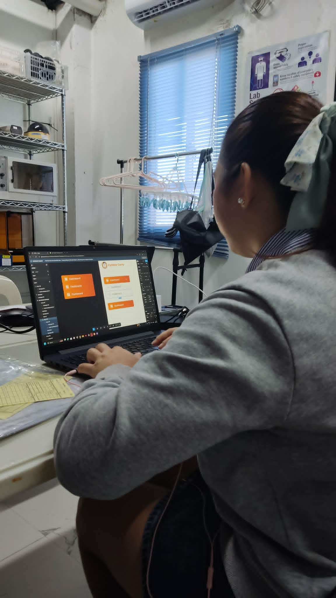

During the first week of my On-the-Job Training, I was assigned as a Quality Assurance Tester for the CCPOS system. I reviewed Software Quality Assurance concepts and performed initial testing of the system to identify bugs, errors, and usability issues. I documented the problems encountered and created reports containing detailed notes regarding the issues found within the POS system. Some tasks required overtime work to complete and submit the reports on time. I also attended discussions and interviews regarding the workflow and processes of the POS system to better understand how the system operates and how users interact with it.
As the week progressed, I started designing the initial prototype of the POS system. I worked on the interface layout and began developing the UI structure to ensure that the design was organized and aligned with the required workflow of the restaurant operations. I continuously improved the prototype by refining the design and adjusting interface components based on observations and feedback. Additionally, I spent time learning about hosting platforms such as HostDaddy and Hostinger to improve my understanding of website and system deployment.
Towards the end of the week, I focused on finalizing the prototype to prepare it for presentation. I continuously edited and enhanced the design to improve its appearance, structure, and usability. I also rendered overtime work to complete the prototype and ensure that it would be ready for presentation on the following Monday. This week enhanced my knowledge and skills in quality assurance testing, documentation, UI/UX design, and collaboration within a development environment.


